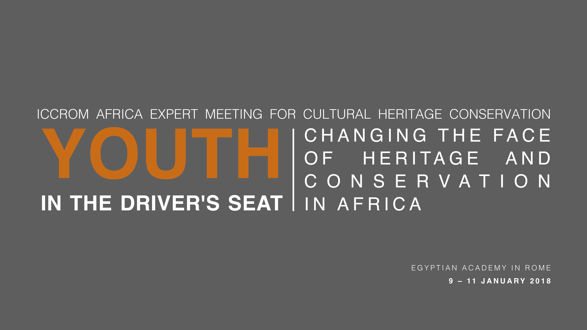
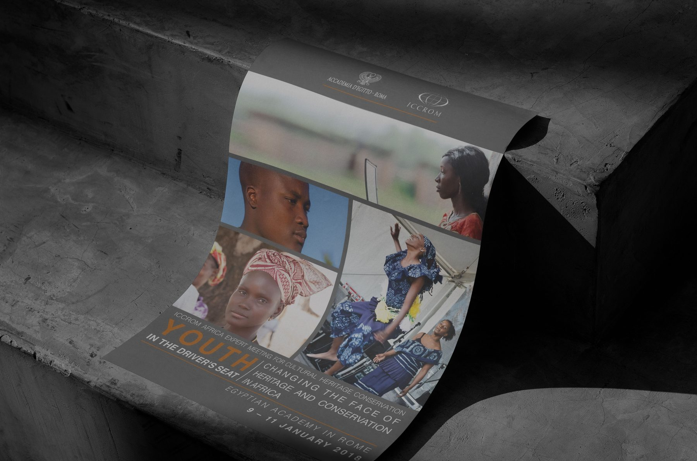
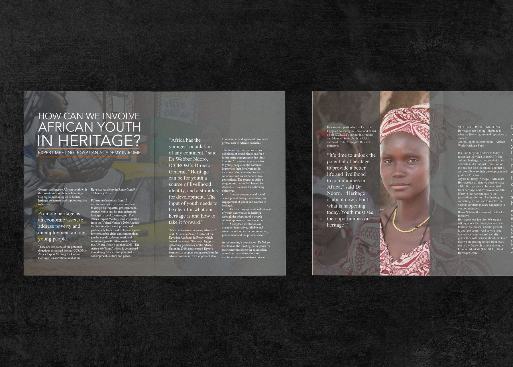
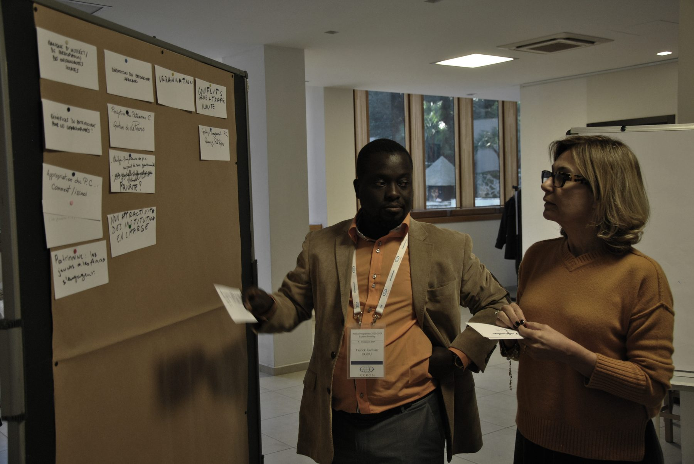
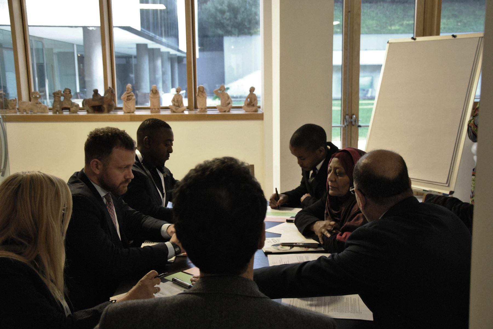
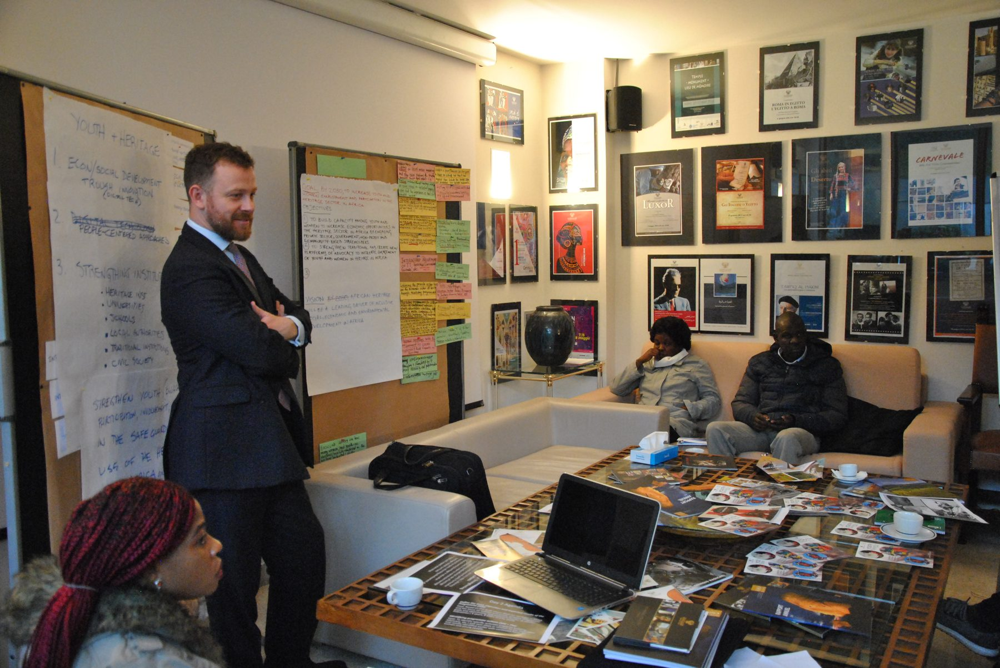
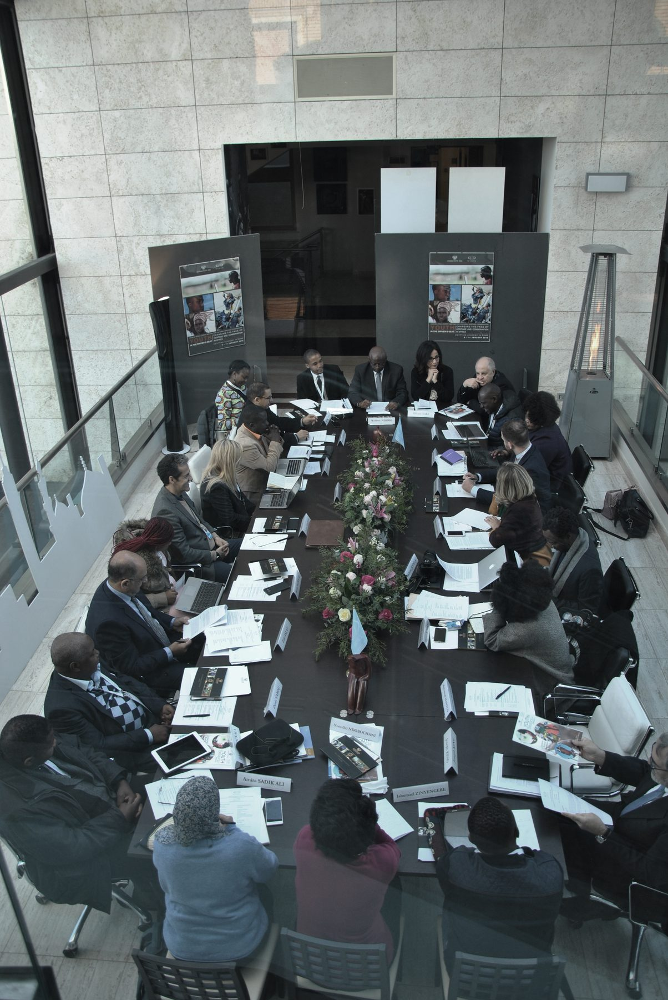

Young professionals from across Africa, brought together to talk about who leads the next chapter of heritage conservation. Organized by ICCROM with the Egyptian Academy in Rome, the event made room for youth voices and reinforced something simple: Africa is already leading on protecting its own heritage.

The poster carries that message through a collage of faces — young African heritage professionals, photographed with all the diversity and energy the event itself was built on. The workshop report follows the same language.


Printed and used at the event.



